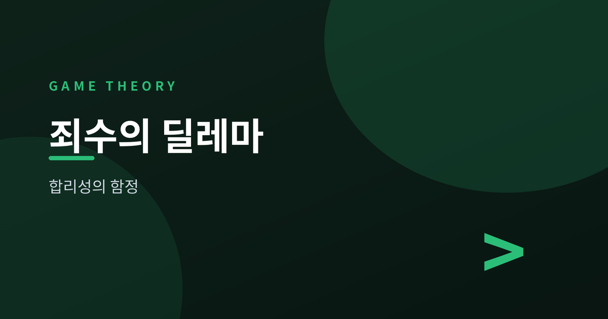
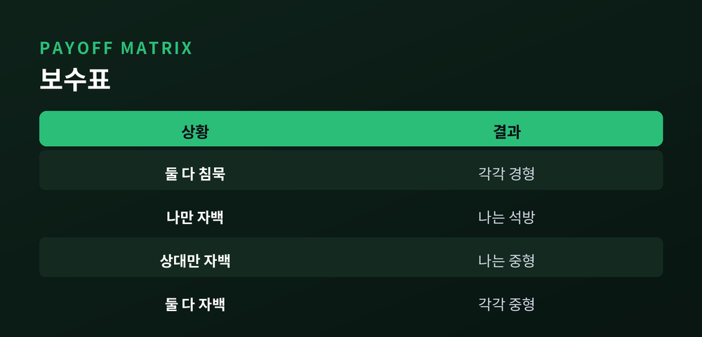
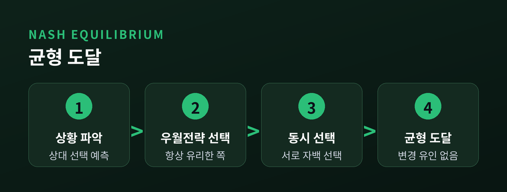
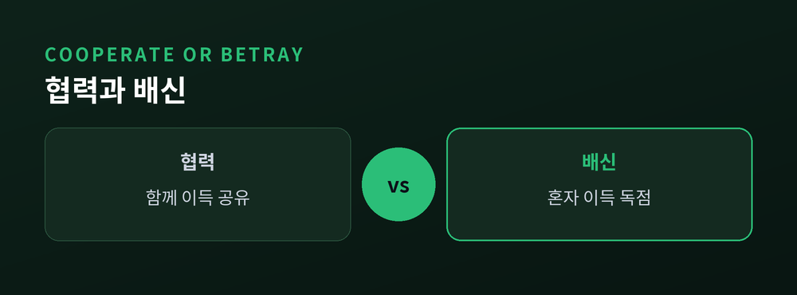
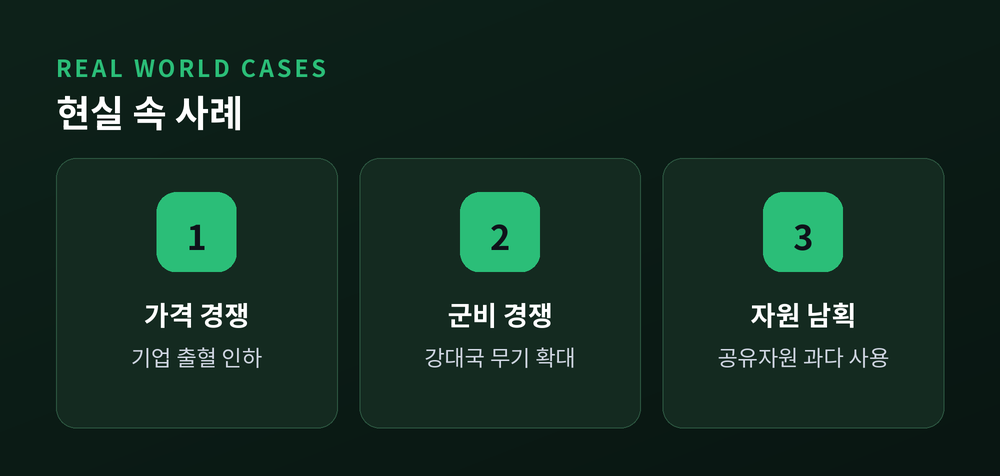

합리적 선택이 최악을 부르는 이유

오늘은 게임이론의 대표 사례인 죄수의 딜레마를 정리해 보려 합니다. 각자 최선을 다해 선택했는데도 결과는 최악에 가까운 경우가 있습니다. 우월전략, 내시균형, 파레토 비효율, 반복게임이라는 네 가지 개념으로 그 이유를 짚어보겠습니다.
죄수의 딜레마는 1950년대 랜드연구소에서 처음 정식화된 모형입니다. 이후 앨버트 터커가 지금의 이름을 붙이며 널리 알려졌습니다. 단순한 이야기지만, 경제학과 정치학에서 지금도 자주 인용됩니다. 협상, 경쟁, 규제처럼 복잡해 보이는 문제도 이 단순한 틀로 정리하면 뜻밖에 선명해집니다.
두 용의자가 각각 다른 방에서 조사를 받습니다. 서로 대화할 수 없습니다.
선택지는 두 가지입니다. 침묵하거나 자백하거나.
둘 다 침묵하면 증거 부족으로 가벼운 처벌만 받습니다. 한 명만 자백하면 자백한 쪽은 즉시 풀려나고, 침묵한 쪽은 무거운 처벌을 받습니다. 둘 다 자백하면 둘 다 중간 수준의 처벌을 받습니다.
문제는 여기서 시작합니다. 상대가 무엇을 선택하든, 자백이 개인에게는 항상 더 유리합니다. 침묵을 지켜 얻을 수 있는 최선의 결과보다, 자백해서 얻는 최악의 결과가 오히려 낫기 때문입니다.
결국 두 사람 모두 자백을 택합니다. 그리고 둘 다 침묵했을 때보다 나쁜 결과를 받습니다. 이것이 죄수의 딜레마입니다. 각자에게는 합리적인 선택이, 둘을 합쳐 보면 가장 어리석은 선택이 되는 구조입니다.

여기서 자백은 '우월전략'입니다. 상대의 선택과 무관하게, 언제나 더 나은 결과를 주는 선택이기 때문입니다.
우월전략은 계산이 단순합니다. 상대가 침묵해도 자백이 유리하고, 상대가 자백해도 자백이 유리합니다. 고민할 이유가 없습니다. 상대의 심리를 읽거나 눈치를 볼 필요조차 없다는 점에서, 우월전략은 가장 안전한 선택으로 여겨집니다.
두 사람 모두 우월전략을 따르면 '둘 다 자백'이라는 결과에 도달합니다. 이 상태를 내시균형이라 부릅니다. 존 내시가 정리한 이 개념은, 어느 한쪽도 혼자서는 선택을 바꿀 이유가 없는 상태를 뜻합니다.
상대의 선택이 고정되어 있다고 가정해 봅시다. 그 상태에서 나 혼자 침묵으로 바꾸면 손해입니다. 그래서 이 균형은 흔들리지 않습니다.
문제는 안정적인 균형이 반드시 좋은 결과는 아니라는 점입니다. 내시균형은 '아무도 바꿀 유인이 없는 상태'일 뿐, '가장 나은 상태'라는 보장은 없습니다.
비슷한 구조는 시장에서도 나타납니다. 과점 시장의 두 기업이 가격을 두고 경쟁한다고 생각해 봅시다. 둘 다 높은 가격을 유지하면 함께 이익을 봅니다. 하지만 한 기업이 몰래 가격을 낮추면 시장을 독차지할 수 있습니다. 상대도 같은 계산을 하고 있다는 사실을 알기에, 먼저 움직이지 않으면 손해를 본다는 불안이 커집니다. 결국 두 기업 모두 가격을 낮추고, 둘 다 이익이 줄어드는 균형에 도달합니다. 죄수의 딜레마와 같은 구조입니다.

둘 다 침묵했다면 어땠을까요. 둘 다 지금보다 나은 처벌을 받았을 것입니다.
즉 '둘 다 자백'이라는 결과는 파레토 비효율적입니다. 파레토 효율이란, 누군가를 더 나아지게 하려면 반드시 다른 누군가가 나빠져야 하는 상태를 말합니다. 반대로 파레토 비효율은 최소 한 사람을 더 나아지게 하면서 다른 사람을 나쁘게 만들지 않는 대안이 존재하는 상태입니다. 죄수의 딜레마에서는 '둘 다 침묵'이 바로 그 대안입니다.
여기에 이 게임의 핵심이 있습니다. 개인 차원의 합리적 선택이, 집단 차원에서는 비합리적 결과로 이어집니다.
"합리적인 개인들의 합이 반드시 합리적인 결과를 만들지는 않습니다."
이 구조는 감옥 밖에서도 반복됩니다. 기업의 가격 경쟁, 국가 간 군비 확장, 공유자원의 남용 모두 같은 뼈대를 가집니다. 각자는 자신에게 최선인 선택을 했을 뿐인데, 전체는 손해를 봅니다.
학자들은 이를 사회적 딜레마라고 부릅니다. 개인의 이익과 집단의 이익이 충돌하는 상황을 통칭하는 표현입니다. 죄수의 딜레마는 그중에서도 가장 단순하고 명료한 형태입니다. 참가자가 둘뿐이고, 선택지도 두 가지뿐이기 때문입니다. 참가자가 많아지고 선택지가 늘어나도 근본 구조는 크게 다르지 않습니다. 목초지를 함께 쓰는 마을 사람들이 저마다 가축을 더 늘리려다 결국 풀밭을 망가뜨리는 이야기도, 뿌리를 따라가면 같은 논리에 닿습니다.

지금까지 살펴본 죄수의 딜레마는 단 한 번의 선택을 다룹니다. 그런데 현실의 관계는 대개 반복됩니다.
같은 상대와 여러 번 마주친다면 계산이 달라집니다. 오늘 배신하면 내일 보복당할 수 있습니다. 미래의 그림자가 현재의 선택에 영향을 미치는 셈입니다.
이 반복게임에서 강력한 전략으로 꼽히는 것이 팃포탯입니다. 첫 판은 협력으로 시작합니다. 이후에는 상대가 직전에 한 선택을 그대로 따라 합니다. 상대가 협력하면 협력으로, 배신하면 배신으로 갚습니다.
정치학자 로버트 액설로드가 진행한 컴퓨터 토너먼트에서, 팃포탯은 훨씬 복잡한 전략들을 제치고 좋은 성적을 거두었습니다. 규칙이 단순하고 예측 가능하기 때문입니다. 협력을 먼저 제안하되 배신은 그냥 넘기지 않는다는 신호가, 상대의 다음 선택을 바꿉니다.
냉전 시기 미국과 소련의 군비 경쟁도 자주 인용되는 사례입니다. 서로 군축이 이익이라는 것을 알면서도, 상대가 먼저 무장을 풀지 않을까 걱정해 군비를 늘렸습니다. 기업 간 가격 경쟁도 비슷합니다. 담합이 서로에게 이익이라는 것을 알아도, 각자는 몰래 가격을 낮추려는 유혹을 받습니다. 어업권을 둘러싼 국가 간 협상이나, 원유 생산량을 조절하는 산유국들의 줄다리기도 같은 구조를 반복합니다.
물론 팃포탯이 만능은 아닙니다. 신호 전달에 오류가 생기면 보복이 꼬리를 물기도 합니다. 사소한 오해 하나가 협력 관계 전체를 무너뜨리는 경우도 있습니다. 이런 한계를 보완하기 위해, 한두 번의 배신은 눈감아 주는 관대한 팃포탯 같은 변형 전략도 연구되었습니다.
그렇다고 해도, 반복이라는 조건 하나가 협력의 가능성을 크게 넓혀준다는 사실은 분명합니다. 국제 무역 협정이나 기후 협약처럼 여러 나라가 오랫동안 관계를 이어가야 하는 영역에서, 이 원리는 협상 테이블의 밑바탕이 됩니다.

정리하면 이렇습니다. 죄수의 딜레마는 개인의 합리성과 집단의 합리성이 어긋날 수 있음을 보여줍니다. 내시균형은 안정적이지만, 그 균형이 최선이라는 보장은 없습니다. 우월전략을 따랐을 뿐인데도, 모두가 함께 손해를 보는 결과에 이를 수 있다는 사실이 이 모형의 진짜 무게입니다.
다만 관계가 반복되고 신뢰가 쌓이면, 협력은 충분히 가능한 선택지가 됩니다. 완벽한 해법은 아닙니다. 반복이 곧 협력을 보장하지도 않습니다. 그래도 한 번의 배신보다, 여러 번의 신뢰가 결국 더 나은 결과를 만든다는 점만은 분명해 보입니다.
게임이론은 인간을 냉정한 계산기로 그립니다만, 그 계산 안에도 협력이라는 선택지가 존재합니다. 결국 관건은 관계를 얼마나 길게, 얼마나 진지하게 이어갈 것인가에 달려 있습니다. 단 한 번의 만남이라면 배신이 합리적일지 모릅니다. 그러나 우리 대부분의 관계는 한 번으로 끝나지 않습니다.
내일도 마주칠 상대라면, 오늘의 선택을 한 번 더 고민해볼 일입니다.